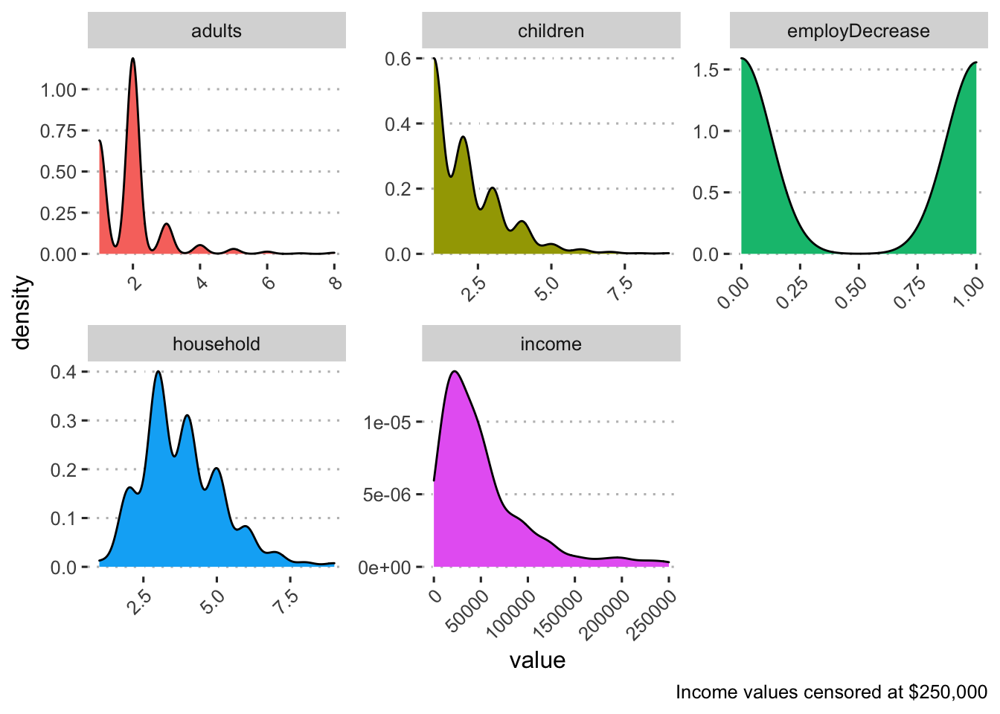
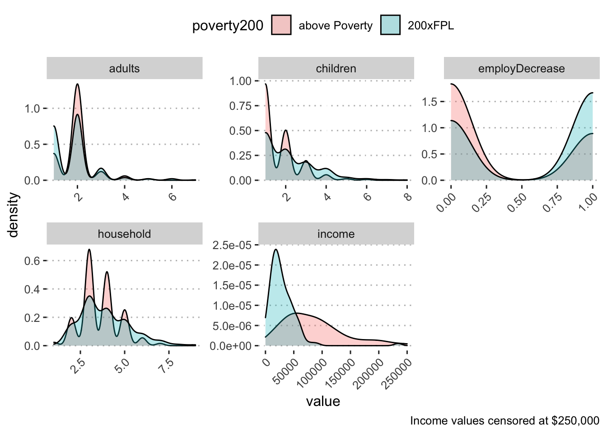

Demographics by income for Black respondents:
| variable | n | mean | sd | range |
|---|---|---|---|---|
| adults | 690 | 1.91 | 0.92 | 1.00 - 8.00 |
| children | 697 | 2.00 | 1.23 | 1.00 - 9.00 |
| employDecrease | 596 | 0.50 | 0.50 | 0.00 - 1.00 |
| household | 690 | 3.81 | 1.35 | 1.00 - 9.00 |
| income | 120 | 56,265.07 | 56,993.16 | 691.00 - 300,000.00 |

| variable | n | mean | sd | range |
|---|---|---|---|---|
| above Poverty | ||||
| adults | 220 | 1.96 | 0.68 | 1.00 - 5.00 |
| children | 221 | 1.67 | 0.92 | 1.00 - 6.00 |
| employDecrease | 205 | 0.33 | 0.47 | 0.00 - 1.00 |
| household | 220 | 3.59 | 1.07 | 1.00 - 7.00 |
| income | 49 | 91,870.90 | 67,107.32 | 5,900.00 - 300,000.00 |
| 200xFPL | ||||
| adults | 357 | 1.83 | 0.94 | 1.00 - 7.00 |
| children | 361 | 2.11 | 1.28 | 1.00 - 8.00 |
| employDecrease | 297 | 0.60 | 0.49 | 0.00 - 1.00 |
| household | 357 | 3.85 | 1.40 | 1.00 - 9.00 |
| income | 71 | 31,692.03 | 30,561.91 | 691.00 - 234,000.00 |
